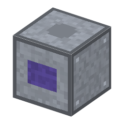

ステッパー（縮小投影露光）
Stepper (reduction projection)・ブロック・Semiconductor
仮（まだ本物どおりでない所がある）
本当の歴史：[9-39] 縮小投影露光（1978年）

説明
①子ども マスクの模様をレンズで小さくして、ウェハーの上に1チップずつ並べて焼く機械。
②学生 マスクアライナー＋鋼×6＋モーター＋銅ケーブル。電気 1.5kW。レジストを塗った板・マスク・投影レンズ・台のねじを入れ、「1チップ送って焼く」を4回押すと1枚焼ける（今は手で送る段階1）。密着露光（方眼16）より細かい方眼36が焼ける（銀塩マスクは24までなのでクロムマスクが要る）。マスクに触れないので傷まない。
③大人 1978年、アメリカの GCA が DSW を発売し、マスクを縮めて1チップずつ「送っては焼く（ステップ・アンド・リピート）」露光が始まった。1980年代にはニコン・キヤノンのステッパーが世界の工場に広まった。
④ガチ 解像度 CD＝k1×λ÷NA。マスクを大きく作れるので、マスクのごみや誤差も小さく写る。のちに、細いすき間の光でマスクとウェハーを同時に走らせる「スキャナー」になった。半導体の歴史は「もっと短い光で、もっと細かく」の歴史。